生活被压低
航班改成经停
Agentf08 记成知会、3 份；f10 降到 1 份；f11 在改签选项还开着时撤下。
打磨改为等你并一直保留，到 f13 答者确认只是技术经停，才降回知会。
进展、发现与别人的消息不断涌来；Fold 让 Agent 把它们整理成一份有注意力预算的状态。
几个 Agent 同时替一个人工作时，工作进展、外部观测、别人或本人说的话会一起涌来。加在一起，往往超过这个人读得完的量。
Fold 让 Agent 承担这部分整理：结合当前状态和这个人的处境，判断什么值得他看，给每件事分一份注意力，并说清楚哪些事在等他决定。
这本小册子用一份由真实公开数据改写的两周，说明这项工作做到了哪里、还缺什么。

原型 · 手机首页 · 8 月 16 日零点
一个化名人物的收件箱，这半天进来上百条输入。首页只说几件在等他，最急的一件放在最上面，按钮说明怎么答。
后面十五页依次回答：问题有多大，靠什么假设，用什么数据，Agent 判得怎么样，表达成什么样子，还缺什么。
一份状态，按注意力分配；
人只回答需要他回答的事。
噪音不是少数例外，而是一个真实收件箱的常态。
Jonas 是一个化名人物：开源网络库的维护者，家里有孩子、有猫、有在修的房子，也逛自然论坛、订 newsletter。他两周收到的输入，按半天切成一帧。
多数输入写得认真，却与他无关：关注分类里的论坛长帖、newsletter 全文、机器人的评审与失败通知。文本规则认得出机器人和“谢谢”，认不出“写得认真、与他无关”。
要他亲自决定的事夹在中间：猫可能吃了双倍抗生素，车道下的主水管在漏，航班改成了经停。
同一帧里的六条输入，与 Agent 写下的处置和理由
| 来源 | 输入 | 处置 |
|---|---|---|
| 论坛 · 自然闲谈 | raven13：Which animals to look for during the cold… | 噪音他人的自然话题 |
| 订阅邮件 | The Azure Journal：EP222: What is Google’s TPU? | 噪音订阅通讯 |
| Mastodon | frost_heath：:ablobcatheartsqueeze: | 噪音对他嘟文的一个表情 |
| GitHub · Copilot | Re: build: drop dirent.h detections (PR #13588) | 暂缓他人 PR，没有点名他 |
| CI · github-actions | Run failed: Windows - master (d43a585) | 用上合并修复后仍失败 |
| 问答 · 房屋维修 | Jonas B.：Can a split copper water line be patched? | 用上他的新提问：主水管漏水 |
这一帧 142 条：用上 78 条，暂缓 34 条，判为噪音 30 条。英文是改写后的原文，只替换了名字。
Agent 判断一件事对这个人有多重要；脚本只换算份额、检查预算、保存记录。
核心假设是：LLM 带来更多信息的同时，也能结合语境估计一件事会不会改变这个人的理解或行动，以及延后会怎样。
Agent 不直接写数字，只给每件事一个档位；脚本按固定换算得出份额，再按份额排序。
一层的份额总量固定。超出时整批退回，并说明超在哪里；谁让位由 Agent 决定，脚本不会自动降档或挤掉条目。
每件事可以有自己的下一层，下一层有同样大小的预算。留白是允许的，它说明这一刻没有更多值得占位的事。
五档与份额（一层预算 64 份）
| 档位 | 份额 | 换算 |
|---|---|---|
| critical | 24 | 3/8 预算 |
| high | 12 | 3/16 预算 |
| normal | 6 | 3/32 预算 |
| low | 3 | 3/64 预算 |
| trace | 1 | 固定 1 份 |
左图：8 月 16 日零点 Jonas 的根层，用掉 63 份、留白 1 份。猫的药量是 high，12 份；三件 normal 各 6 份；一件 low 3 份；30 件 trace 各 1 份。
假如这一帧把猫的药量升到 critical，别的都不动，内核会这样退回整批：
人物是化名，输入是真实公开文本；只按规则替换名字，没有用模型改写。
工作流来自一位开源维护者在 GitHub、CI、邮件列表、Mastodon 与博客上的两周；社区流来自一个自然观察论坛；生活流来自生活问答站上的真实提问；订阅流是 newsletter、营销邮件与天气提醒。
项目、账号、人名、链接与编号按一张本机化名表一致替换。化名不是匿名，逐字搜索仍可能找回出处。
拼接必然有接缝：有人住公寓、有人有车道，营销邮件来自旧年代。这些不一致来自拼接，不是 Agent 的误读。
和只有工作的单一来源、手写情境并排
| 指标 | 只有工作 | Jonas（拼成） | 手写情境 |
|---|---|---|---|
| 输入条数 | 1676 | 2829 | 112 |
| 每帧平均 / 最多 | 59.9 / 128 | 101.0 / 209 | 3.0 / 9 |
| 不同作者；前 5 位占比 | 286；62% | 643；36% | 27；59% |
| 低信息量占他人来信 | 33% | 22% | 24% |
| 事项数；只出现一次 | 221；13 | 482；172 | 13；4 |
| 当地 0–7 点到达 | 8% | 14% | 0 |
低信息量只算文本规则认得出的机器人、模板、空内容与致谢。论坛帖与问答回复几乎都有实质内容，所以这一行在 Jonas 身上反而更低。
六件跨流的事：挑的是时间或话题真实重合的线程，没有手写输入
两种评测：在手写情境上逐帧对比作者的编排，在真实语料上从空状态自由运行两周。
逐帧评测每帧都从作者的状态出发，只看这一帧怎么判。四次运行换了模型、Harness 与指引版本。哪些输入该用、哪些是噪音，四次几乎一致；档位与 kind 的分歧更大，同一配置重跑也会变。提交被退回的原因因模型而异：一个漏列子项，一个把可选字段写成 null。
自由运行让 Agent 维护自己的状态两周，没有失控，同一组输入大多进了同一件事。压下订阅与社区帖，与他后来的行为相符。每个条件都只跑了一次。
逐帧评测：手写情境 36 帧、112 条输入，与作者编排对比
| 指标 | Opus · 一版 | Haiku · 一版 | Sol · 一版 | Sol · 二版 |
|---|---|---|---|---|
| 处置与作者一致 | 91% | 91% | 90% | 86% |
| 档位完全一致 | 48% | 38% | 53% | 51% |
| 档位相差一档以内 | 98% | 92% | 94% | 94% |
| kind 一致 | 72% | 58% | 76% | 76% |
| 首次提交被退回 | 2 / 36 | 0 / 36 | 7 / 36 | 7 / 36 |
| 同一件事写成两项 | 2 | 2 | 1 | 2 |
Opus = claude-opus-5-5，Haiku = claude-haiku-5-5，Sol = Codex 下的 gpt-6.1-sol；一版、二版指 SKILL.md 的版本。
自由运行：混合语料 28 帧、2829 条，与弱标注对照
| 对照 | 结果 |
|---|---|
| 提交 | 28 / 28 帧；退回 5 次，看到回执后都改对 |
| 判为噪音的输入，与他后来的行为不矛盾 | 0.89 |
| 有强依据该忽略的输入被忽略（召回） | 0.277 |
| 同组输入进了同一根层事项 | 0.983 |
| 同帧事项的成对排序与弱档位一致（平局记半） | 0.661 |
召回低，多是 CI 失败、评审与关闭通知被引用进了 CI 事项与每日完成记录，没有被丢掉。
把自由运行打磨成演示数据时，多数修正落在三类错误上。
自由运行的批次全部被内核接受，预算也守住了。问题出在取舍：工作里的事更容易拿到份额，生活里要他决定的事常被压低。
反例也有：猫的药量在看到“有失明风险”的回答后，Agent 自己把它升成了根层最大的一件。
打磨只在判断会误导读者时才改，改法写成对批次的补丁，再从空状态重放；措辞偏好和说得通的档位分歧都不改。
31 处修正，分布在 18 帧；其中 14 处是 master CI 的同一个判断逐帧延续；输入的处置一处没改。
Agentf08 记成知会、3 份；f10 降到 1 份；f11 在改签选项还开着时撤下。
打磨改为等你并一直保留，到 f13 答者确认只是技术经停，才降回知会。
Agentf02 到 f28 共 27 帧都是“等你”、12 份，期间别人在修。
打磨f11 起改为进行中、6 份：他的动作是评审与合并修复，不是亲自去查。
Agent同一个半天里的两个提问：贝壳熬汤、猫在花盆里排便，并成一件。
打磨f11 拆成两件；猫的那件与人物设定直接相关，问题与反馈不再挂在一起。
f 后面是帧号：f01 是 8 月 3 日正午，此后每 12 小时一帧，f28 是 8 月 17 日零点。
自由运行原样：根层 64 份，两周平均分给了谁
| 生活流：看见了，但份额低 | 数量 |
|---|---|
| 他人发来的生活输入，被采用 | 227 / 245 |
| 他后来有行动的生活事项帧，被 Agent 纳入 | 45 / 61 |
| 其中拿到 6 份以上 | 2 |
| 航班改经停、车道下的主水管、热浪里的空调 | 各 1–3 份 |
没有一种画法能同时回答“此刻要我做什么”和“两周里注意力去了哪”。
形式按场景分工。首页类只放最急的几件；空间类在电脑前处理评审与二选一；时间类处理期限与推后；复盘类不收作答，只标出问题怎样开、怎样关。
第一轮把状态搬进手表、广播、小票、报纸这类现成载体，第一眼成立，结构却没有新东西，多数撤下。第二轮只为状态自身的关系发明画法。
要练的是一种元能力：先想清楚读者在哪、此刻想知道什么，再决定把份额画成面积、带宽、液滴、字号还是刻度。
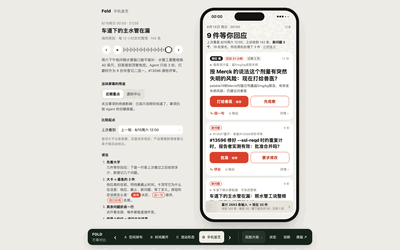
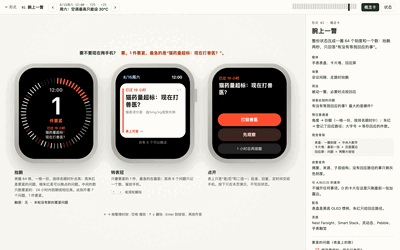
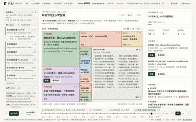
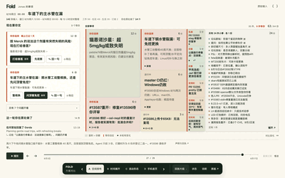
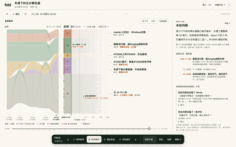
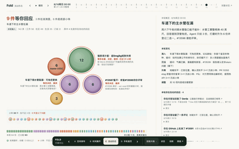
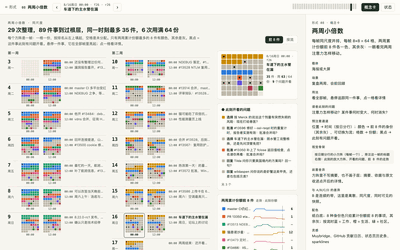
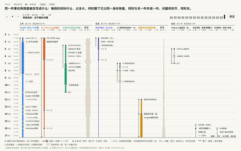
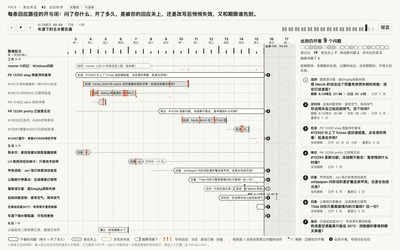
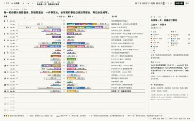
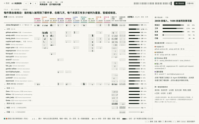
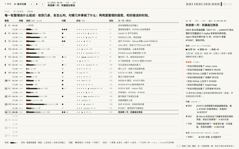
手机首页与腕上一瞥只承载最急的少数问题。
手机首页顶部一句话说几件等你回应。最急的三件是大卡，大字是要你回答的问题，按钮形态说明怎么答：选项是决定，回复框是补一句，单个动作是去做。卡片顶上写它为什么在这里：档位、离截止还有多久、新问题还是已更新、等了多久。
腕上一瞥只回答一个问题：要不要现在掏手机。表圈一格一份，中间的数只数要紧的问题；能在表上答的只有确认与二选一，其余转到手机。
他在原处做过的事写成动作句，例如“你在问答站回复了 Gerda”；回复的不是这张卡的问题，就不算回答。


8 月 14 日零点：猫的药量超过禁忌。首页 7 件等你回应，表上只数 2 件要紧，最急的 17 点前要答。
首页排序：档位，24 小时内到期，截止时间，份额。其余问题折成一行，长尾的小事折成“另有若干项次要事项”。
原版树图与 A 空间排布把整份状态铺开，适合顺手批准评审、当场二选一。
原版把根层铺满一块板，格子面积等于份额，留白是最后一格。工作评审的格子里直接给出“批准 / 要求修改”。
真实数据里，根层的大多数事只占最小的一份。两种形式都把这类没有问题的小事合成“另有若干件小事”，点开再铺。切帧时格子平移、长大或缩小，正文不被拉伸；作答后格子收成一行回执。


A 让事项像纸片散在桌上，空着的桌面就是未分配。左栏只给最急的两个问题大卡，选项可以直接点，也可以回一句或稍后再看。
A · 同一时刻的左栏：猫的药量截止已过 1 天，主水管要在整根换与顶管免挖之间选；推荐项实心，另有 7 个问题收成一行。
B 时间展开与 C 流动形态处理“什么时候”。
B 左边是最近几次整理里每件事的份额带，中间是此刻的预算柱，右边是此刻之后：问题的期限画成刻度，一眼看出谁先到，过期的写明已过多久。
C 让每件够大的事成为一滴液体，面积与份额成正比；不够大的沉在底部，串成小珠。把一件事推后，它沉到水面以下，到点的那一帧从原处浮回来。只有明确合并的两滴才会融成一滴。
两种形式都只把作答记在本页，回执写明问题在回放里仍开着。


六张复盘图不收作答，各回答一种其他形式看不见的关系。
复盘类都可以逐帧前后走。悬停一件事，它在整张图里亮起；点开有摘要、依据与原文。
六张图读的是同一份回放，各挑一种关系画出来：名字怎样变，问题怎样开关，格子怎样移动，份额怎样让渡，输入从哪里来，每一轮由什么组成。
它们也把状态的缺口照得最清楚：没有稳定的称呼，身份线不知道该把一件事叫什么；没有让位配对，让位图只能把增减并排，不能连线。


六类回应组件按问题类型给出控件，各形式共用，只换外观。
每个登记的问题声明自己期待哪种回应：确认、选择、回复、定时间、批准一个外部动作、推迟。控件按类型生成。
按下按钮只说明“已保存”；下一轮整理读到它，才显示“已收到”；批准合并之后 PR 是否真的合了，要看之后的版本。三件事分开写，不把“已保存”说成“已办完”，每一步都可以撤回。
真实数据里，他的回应大多发生在来源处：在 GitHub 上批准，在问答站回评论。只有对得上登记的问题，这些动作才算回答。
演示数据登记了 20 条回应路径：7 条在两周内被他在来源处回答，13 条到最后仍开着。
| confirm 确认 | choose 选择 | reply 回复 | schedule 定时间 | approve 批准 | defer 推迟 |
|---|---|---|---|---|---|
| 一个按钮 | 两三个选项 | 回一句 | 选一个时间 | 批准、要求修改、评论 | 推到某一刻 |
| 1条 | 5条 | 4条 | 2条 | 6条 | 2条 |


下面是原型的手机首页，停在车道下的主水管漏水的那一帧。

画面太小时，可以在新页面打开原型。作答只存在本页内存，刷新即清空，不调用模型。要从仓库根目录的本地服务（python3 -m http.server 4190，打开 /docs/brief/）或体验站打开；直接双击文件时，浏览器会拦下原型的模块。打印时这里换成同一帧的截图。

还可以打开回应组件页 prototype/forms/respond.html：六类控件排在一起，每类取演示数据里第一次登记的同类问题，逐个按下看回执怎样变。形式画廊 prototype/forms/index.html 并排列出十二种形式的入口。
有的是评测撞到的，有的是画形式时撞到的；都记在决策记录里，契约还没改。
一项缺口只被一边撞到，可能是那一边的问题；评测与形式从两头撞到同一处，更像状态本身少了东西。回应路径就是这样：评测里反馈指不回具体的问题，形式里画不出问题何时关上。
演示数据先替几处缺口补上了形态：回应路径有自己的编号与截止，事项有手写的短名，每一帧有旁白。它们让原型画得出来，但不是契约。
| 缺什么 | 谁撞到，怎样撞到 | 现在 |
|---|---|---|
| “不填”与“清空”没有分开 | 评测：模型习惯把不适用的字段写成 null，按契约这会清空子层或期限 | 未决；可改用显式的清空列表 |
| 清空期限不要求理由 | 评测：几处清空已有期限时没有任何理由，看不出是否有意 | 未决 |
| 回应路径的生命周期 | 评测与形式：反馈指不回问题；回应时序要知道问题何时登记、怎样关上 | 演示数据先行，契约未接纳 |
| 事项的稳定称呼 | 形式：身份线、让位图要一个不随改写变化的名字 | 演示数据手写短名 |
| 批次级说明 | 形式：批次记谱要一句“这一轮做了什么” | 借用演示旁白 |
| 上次查看的锚点 | 形式：首页、批次记谱要画“你上次看到这里” | 首切片不采集，用上一帧代替 |
| 让位的配对 | 形式：回执只记增减，不记谁为谁让位 | 未决 |
演示数据先补上的三种形态，只存在于 prototype/data/composite/scenario.mjs
id: ask-02 item: pr-13350-etag registered_at: 8/3 12:00 due_at: null expects: approve handler: assistant:next-batch
ci-master-urls: label: master URLs CI 失败 short: master CI color: #b8643a
f26 title: 车道下的主水管在漏 narrative: 周六下午他问铜水管裂口能不能补……Agent 只给 3 份，打磨时升为 6 份并登记二选一。
同一份清单里还有部分子项列表的语义、SKILL.md 第三版与自由运行的方差（见第 15 页），以及两件待用户决定的事（见第 16 页）。
现有证据说明它能稳定操作、大体判得对；还没有说明人回来以后更省力。
每个条件只跑了一次。同一配置重跑，档位也会变，单帧单项的差异只有在多次运行中方向一致才有意义。
弱标注是事后诸葛：只看他后来做了什么。“没有再跟进”不等于不重要，猫的药量就是这样。
演示数据经过人工打磨，看到的判断不全是模型原样。形式的性能数字来自无头浏览器，只作参考，也没有在真机上试过手感。
最终要回答的是：他回来以后，能不能很快认出要自己处理的事。这需要人来读，不能只和作者的编排或他后来的行为对表。
make test从下往上读：实心的三级是已有证据，虚线的五级还没做。
本册的数字都来自仓库里的文件。下面列出这些文件、这一轮的模型费用，以及需要拍板的事。
docs/product.md、docs/decisions.md、docs/information-contract.mddocs/evaluations/README.md 与它列出的三份报告corpus/README.md、corpus/composite/MIX.md、NOISE.md、LABELS.mdprototype/data/composite/POLISH.md、SOURCES.mdprototype/README.md、prototype/forms/CONCEPTS.md、prototype/forms/polish/ 五份打磨记录scripts/shoot-forms.mjs 在无头 Chrome 中截取；示意图用 CSS 画这一轮的模型费用
| 运行 | 费用 |
|---|---|
| Opus 逐帧评测，手写情境全量 | 5.63 美元 |
| Haiku 逐帧评测，手写情境全量 | 0.29 美元 |
| Opus 自由运行，混合语料两周 | 24.50 美元 |
| Codex 下的 Sol：两次全量运行，另两组 12 帧对照 | 订阅额度，不按次计费 |
要不要作为家庭流。挑选时被权限系统以个人敏感信息为由拦下，没有绕过；生活流暂用公开问答。
演示数据与本册截图含化名改写的真实公开文本。决定之前不发布站点；问答站的署名要求在化名后无法满足。
这一轮的提交里，两种模型署名并存，历史不改写。合并到主干时是否统一，由你决定。
替人整理，
把决定留给人。